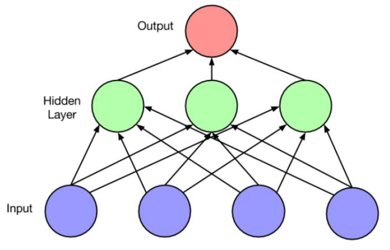

LSTM forward and backward derivation:
https://datascience-enthusiast.com/DL/Building_a_Recurrent_Neural_Network-Step_by_Step_v1.html
RNN
deep learning book : https://srdas.github.io/DLBook/RNNs.html#LSTMs
Vanilla RNN (short-term memory)
RNN,1987
BP-Nature，1986
BPTT,1988
Truncated BPTT, 1990
- 1987，Real-Time Recurrent Learning, 提出Vanilla RNN (short term memory)， 有限的记忆，难以捕捉长期的时间关联
- 1988，Back-Propagation Through Time，无法很好处理权重指数级爆炸或梯度消失问题
因此，此时RNN未得到较大关注。
RNN结构
- Networks with feedback loops (recurrent edges) vs feedforward neural network
- Output at current time step depends on current input as well as previous state (via recurrent edges)
example



LSTM
1997，Long short term memory提出
- 长短时记忆，记忆可控
- An appropriate gradient-based learning algorithm
有效改善以上问题，成为往后RNN发展的基础结构，在memory cell和network architecture上的变形，以适用实际数据和业务场景

标准的 RNN 中，这个重复的模块只有一个非常简单的结构，例如一个 tanh 层。LSTM 同样是这样的结构，但是重复的模块拥有一个不同的结构，重复模块包含四个交互的gate。
主要大的区别是，采用一个叫 “细胞状态（state）” 的通道贯穿了整个时间序列。通过精心设计的称作 “门” 的结构来去除或增加信息到细胞状态的能力。组成部分
1）" 忘记门”；
2）“输入门” 的打开关闭也是由当前输入和上一个时间点的输出决定的。
3）“输出门”，控制输出多少，最终仅仅会输出确定输出的那部分。
4）状态门：让几个 “门” 的输入数据除了正常的输入数据和上一个时刻的输出以外，再接受 “细胞状态” 的输入。
Bidirectional RNN
1997，Bidirectional Recurrent Neural Network
2013, BLSTM
经典语音识别系统通常有如下几个组成部分：特征提取，如利用输入的waveform提取MFCC特征，然后再经过三个独立的模型再求得它们概率的乘积得到总的概率：
- acoustic model 即根据之前提取的特征预测每个对应的音素(phoneme)，传统上用GMM Gaussian Mixture Model。
- pronunciation model即根据音素组合成词语的发音, 传统上用一些pronunciation table。
- language model即根据发音预测对应的文本, 传统上用一些n-gram model。
神经网络技术发展后，特征提取又可用CNN来做，其他部分也可用DNN或一些RNN结构如LSTM来做。
但是这三部分模型还是相互独立训练的，这使得训练过程异常复杂，我们希望能用一个end-to-end的模型来包含所有的步骤：可输入语音或其频谱而直接产出文本从而简化训练过程。
End-to-end模型：CTC，RNN-T，LAS，et. al.

CTC
2006，ICML，Connectionist Temporal Classification: Labelling Unsegmented Sequence Data with Recurrent Neural Networks，主要是为了解决利用LSTM训练时需要目标label与输入的每一帧需要alignment的问题
2009年，一个CTC-LSTM ()网络赢得了多项连笔手写识别竞赛 (The International Conference on Document Analysis and Recognition (ICDAR))，成为第一个赢得模式识别竞赛的RNN。RNN逐渐应用于pattern recognition各领域
CTC is a type of neural network output and associated scoring function, for training recurrent neural networks (RNNs) such as LSTM networks to tackle sequence problems where the timing is variable.
CTC对于语音识别的声学建模带来了极大的好处
1）化繁为简，不在需要强制对齐，可以使用文本序列本身来进行学习训练
2）加速解码，大量Blank的存在，使得模型在解码过程中可以使用跳帧操作，因此大大加速了解码过程。
但是CTC模型仍然存在着很多的问题，其中最显著的就是CTC假设模型的输出之间是条件独立的。这个基本假设与语音识别任务之前存在着一定程度的背离。此外，CTC模型并不具有语言建模能力，同时也并没有真正的实现端到端的联合优化。
RNN-T
基于CTC的改进，语音识别,
2012，Sequence Transduction with Recurrent Neural Network
2014，Sequence to Sequence Learning with Neural Networks
针对CTC的不足，Alex Graves在2012年左右提出了RNN-T模型，RNN-T模型巧妙的将语言模型声学模型整合在一起，同时进行联合优化，是一种理论上相对完美的模型结构。
RNN-T模型引入了TranscriptionNet也就是图中的Encoder（可以使用任何声学模型的结构），相当于声学模型部分，图中的PredictionNet实际上相当于语言模型（可以使用单向的循环神经网络来构建）。
模型中比较新奇，同时也是最重要的结构就是联合网络Joint Net，一般可以使用前向网络来进行建模。
联合网络的作用就是将语言模型和声学模型的状态通过某种思路结合在一起，可以是拼接操作，也可以是直接相加等，考虑到语言模型和声学模型可能有不同的权重问题，似乎拼接操作更加合理一些。
GRU
2014，a long short-term memory (LSTM) with a forget gate
相比LSTM，使用GRU能够达到相当的效果，并且相比之下更容易进行训练，能够很大程度上提高训练效率

Recurrent convolutional NN
2015 AAAI，Recurrent Convolutional Neural Networks for Text Classification
本文要解决的问题是文本分类，文本分类最关键的问题是特征表示，传统的方法经常会忽略上下文信息和词序，无法捕捉到词义。
为了解决RNN的有偏性问题，有的研究者提出了用CNN（卷积神经网络）来表示文本，并且时间复杂度也是O(n)，但是CNN存在一个缺陷，卷积窗口的大小是固定的，并且这个窗口大小如何设置是一个问题，如果设置小了，则会损失有效信息，如果设置大了，会增加很多的参数。
于是，针对上述模型存在的问题，本文提出了RCNN（循环卷积神经网络）模型

BERT
2019，BERT: Pre-training of Deep Bidirectional Transformers for Language Understanding，语义理解
BERT（Bidirectional Encoder Representations from Transformers）近期提出之后，作为一个Word2Vec的替代者，其在NLP领域的11个方向大幅刷新了精度，可以说是近年来自残差网络最优突破性的一项技术了
- 使用了Transformer [2]作为算法的主要框架，Transformer能更彻底的捕捉语句中的双向关系；
- 使用了Mask Language Model(MLM) [3] 和 Next Sentence Prediction(NSP) 的多任务训练目标；
- 使用更强大的机器训练更大规模的数据，使BERT的结果达到了全新的高度，并且Google开源了BERT模型，用户可以直接使用BERT作为Word2Vec的转换矩阵并高效的将其应用到自己的任务中。
BERT的本质上是通过在海量的语料的基础上运行自监督学习方法为单词学习一个好的特征表示，所谓自监督学习是指在没有人工标注的数据上运行的监督学习。
在以后特定的NLP任务中，我们可以直接使用BERT的特征表示作为该任务的词嵌入特征。所以BERT提供的是一个供其它任务迁移学习的模型，该模型可以根据任务微调或者固定之后作为特征提取器。
GPT-3
https://github.com/openai/gpt-3
2020，
Language Models are Few-Shot Learners
具有1,750亿个参数的自然语言深度学习模型，比以前的版本GPT-2高100倍
该模型经过了将近0.5万亿个单词的预训练，并且在不进行微调的情况下，可以在多个NLP基准上达到最先进的性能。
GPT-3 最令人惊讶的还是模型体量，它使用的最大数据集在处理前容量达到了 45TB。